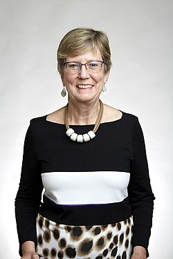

Nancy Reid | |
|---|---|
 Nancy Reid at the Royal Society admissions day in London, July 2018 | |
| Born | Nancy Margaret Reid September 17, 1952 |
| Alma mater | University of Waterloo University of British Columbia Stanford University (PhD) |
| Spouse | Donald A. S. Fraser |
| Awards | |
| Scientific career | |
| Fields | Statistical Sciences |
| Institutions | University of British Columbia, University of Toronto |
| Thesis | Influence Functions for Censored Data (1979) |
| Rupert G. Miller Jr.[1] | |
Doctoral students | Ana-Maria Staicu |
| Website | utstat |
{kind=link}
Nancy Margaret Reid OC FRS FRSC[2] (born September 17, 1952[3]) is a Canadian theoretical statistician. She is a professor at the University of Toronto where she holds a Canada Research Chair in Statistical Theory.[4][5] In 2015 Reid became Director of the Canadian Institute for Statistical Sciences.[6][7]
Reid has served as President of the Institute of Mathematical Statistics and the Statistical Society of Canada.[6] She is co-editor of the Annual Review of Statistics and Its Application.[8]
In 1992, Reid received the COPSS Presidents' Award for outstanding contributions to statistics.[9] She is a Fellow of the Royal Society, the Royal Society of Edinburgh, and the Royal Society of Canada; a Foreign Associate of the National Academy of Sciences; and an Officer of the Order of Canada.[10]
Education
Nancy Reid was born in St. Catharines, Ontario, Canada. She studied mathematics and statistics at the University of Waterloo, earning her B.Math in 1974. She earned her M.Sc. at the University of British Columbia in 1976. At Stanford University she worked with Rupert G. Miller, Jr., receiving her Ph.D. in 1979. Reid did postdoctoral work with David Cox at the Imperial College London from 1979 to 1980.[6][5][1]
Career and research
From 1980 to 1985, Reid was an associate professor at the University of British Columbia. She then joined the University of Toronto and has remained there ever since, becoming a full professor in 1988.[3]
Reid was the first woman to hold a Canada Research Chair in statistics.[11] As Chair of the “Long Range Plan Steering Committee for Mathematics and Statistics” Reid shaped Canadian national policy on mathematical sciences, leading to the creation of the virtual distributed Canadian Institute for Statistical Sciences (CANSSI) in 2012. She has been the Director of CANSSI since 2015.[6][7]
Reid studies the foundations and properties of methods of statistical inference in order to discover how inferential statements can accurately and effectively summarize complex data sets.[5][12]
Reid served as Editor-in-Chief of The Canadian Journal of Statistics from 1995 to 1997[6] and the Annual Review of Statistics and Its Application (2018–).[8] She served as President of the Institute of Mathematical Statistics (1996–1997), and of the Statistical Society of Canada (2004–2005).[6]
Awards and honours
Reid won the COPSS Presidents' Award in 1992,[9] the Krieger–Nelson Prize in 1995,[13] the Statistical Society of Canada Gold Medal[14] and Florence Nightingale David Award[15] in 2009, and the Statistical Society of Canada Distinguished Service Award in 2013.[16] She was made an Officer of the Order of Canada (awarded 2014, invested 2015) "for her leadership in the field of statistical inference, which has helped to facilitate sound public policy decision making."[10]
In 2022, Reid won the Guy medal in Gold "for her pioneering work on higher-order approximate inference which provides a foundational basis for optimal information extraction from data, and has wide-ranging impact on the practice of data analysis".[17][18]
In 1989 she was elected as a Fellow of the American Statistical Association.[19] She was elected a Fellow of the Royal Society of Canada in 2001.[20] She is also a Fellow of the Institute of Mathematical Statistics.[21] In 2015 she was elected a Corresponding Fellow of the Royal Society of Edinburgh,[22] and in 2016 a foreign associate of the United States National Academy of Sciences.[23] She was elected a Fellow of the Royal Society (FRS) in 2018.[2]
Bibliography
Books
- Hinkley, D. V.; Reid, N.; Snell, E. J., eds. (1991). Statistical theory and modelling : in honour of Sir David Cox, FRS. London: Chapman and Hall. ISBN 0-412-30590-9. OCLC 23213733.
- Cox, David R.; Reid, Nancy (2000). The theory of the design of experiments. Boca Raton: Chapman & Hall/CRC. ISBN 1-58488-195-X. OCLC 43864220.
- Brazzale, A. R.; Davison, A. C.; Reid, N. (2007). Applied asymptotics : case studies in small-sample statistics. Cambridge: Cambridge University Press. ISBN 978-0-511-28670-4. OCLC 166126731.
Selected papers
- Reid, Nancy (1981). "Influence Functions for Censored Data". The Annals of Statistics. 9 (1): 78–92. doi:10.1214/aos/1176345334. ISSN 0090-5364. JSTOR 2240871.
- Reid, N.; Crépeau, H. (1985). "Influence functions for proportional hazards regression". Biometrika. 72 (1): 1–9. doi:10.1093/biomet/72.1.1. ISSN 0006-3444.
- Cox, D. R.; Reid, N. (1987). "Parameter Orthogonality and Approximate Conditional Inference". Journal of the Royal Statistical Society, Series B (Methodological). 49 (1): 1–18. doi:10.1111/j.2517-6161.1987.tb01422.x.
- Reid, N. (1988). "Saddlepoint Methods and Statistical Inference". Statistical Science. 3 (2). doi:10.1214/ss/1177012906. ISSN 0883-4237.
- Fraser, D. A. S.; Reid, N. (1993). "Third order asymptotic models: Likelihood functions leading to accurate approximations for distribution functions". Statistica Sinica. 3 (1): 67–82. ISSN 1017-0405. JSTOR 24304938.
- Reid, N. (1995). "The Roles of Conditioning in Inference". Statistical Science. 10 (2). doi:10.1214/ss/1177010027. ISSN 0883-4237.
- Reid, N. (2003). "Asymptotics and the theory of inference". The Annals of Statistics. 31 (6). doi:10.1214/aos/1074290325. ISSN 0090-5364.
- Ghosh, M.; Reid, N.; Fraser, D. A. S. (2010). "Ancillary statistics: a review". Statistica Sinica. 20 (4): 1309–1332. ISSN 1017-0405. JSTOR 24309506.
- Reid, Nancy (2013). "Aspects of likelihood inference". Bernoulli. 19 (4): 1404–1418. arXiv:1309.7816. doi:10.3150/12-BEJSP03. ISSN 1350-7265. JSTOR 23525757. S2CID 16144546.
- Tang, Yanbo; Reid, Nancy (2020). "Modified Likelihood root in High Dimensions". Journal of the Royal Statistical Society Series B: Statistical Methodology. 82 (5): 1349–1369. doi:10.1111/rssb.12389. ISSN 1369-7412. S2CID 225500790.
References
- ^ a b Nancy Margaret Reid at the Mathematics Genealogy Project
- ^ a b Anon (2018). "Professor Nancy Reid OC FRS". royalsociety.org. London: Royal Society. One or more of the preceding sentences incorporates text from the royalsociety.org website where:
“All text published under the heading 'Biography' on Fellow profile pages is available under Creative Commons Attribution 4.0 International License.” --Royal Society Terms, conditions and policies at the Wayback Machine (archived 2016-11-11)
- ^ a b Larry Riddle. "Nancy Margaret Reid". Biographies of Women Mathematicians. Agnes Scott College. Retrieved 2011-01-28.
- ^ "Nancy Reid announced as Inaugural Myles Hollander Distinguished Lecturer". Institute of Mathematical Statistics. October 2, 2020. Retrieved 28 October 2021.
- ^ a b c "Nancy M. Reid". National Academy of Sciences. Retrieved 28 October 2021.
- ^ a b c d e f "Profile: Nancy Reid". Institute of Mathematical Statistics. November 17, 2016. Retrieved 28 October 2021.
- ^ a b "CANSSI's Collaborating Centres Train Future Statisticians to Make Sense of Big Health Data". CANSSI. Retrieved 28 October 2021.
- ^ a b "Editor of the Annual Review of Statistics and Its Application - Volume 5, 2018". Annual Reviews Directory. Retrieved 28 October 2021.
- ^ a b "COPSS Presidents' Award". University of Michigan. Retrieved 28 October 2021.
- ^ a b Office of the Secretary to the Governor General. "Dr. Nancy Margaret Reid". The Governor General of Canada. Retrieved 28 October 2021.
- ^ Lin, Xihong; Genest, Christian; Banks, David L.; Molenberghs, Geert; Scott, David W.; Wang, Jane-Ling (March 26, 2014). Past, Present, and Future of Statistical Science. CRC Press. p. 209. ISBN 978-1482204964. Retrieved 28 October 2021.
- ^ "Nancy Reid, Toronto". www.utstat.utoronto.ca. Archived from the original on 2017-11-06. Retrieved 2017-10-26.
- ^ "Reid, Nancy". ISIHighlyCited.com. Retrieved 2011-01-28.
- ^ "Award Winners". Statistical Society of Canada. Retrieved June 9, 2013.
- ^ Florence Nightingale David Award, Committee of Presidents of Statistical Societies, retrieved 2018-11-04
- ^ "2013 SSC Award Winners". Statistical Society of Canada. Archived from the original on June 5, 2013. Retrieved June 9, 2013.
- ^ Statistics news. "Announcing our Honours recipients for 2022". Royal Statistical Society. Retrieved 13 July 2022.
- ^ "Guy Medals 2022". RSS. Retrieved 2022-07-28.
- ^ "View/Search Fellows of the ASA". Archived from the original on 2016-06-16. Retrieved 2016-11-19.
- ^ "Search Fellows". Royal Society of Canada. Archived from the original on February 4, 2020. Retrieved June 9, 2013.
- ^ "Honored Fellows". Institute of Mathematical Statistics. Archived from the original on 2014-03-02. Retrieved 2017-11-24.
- ^ "Professor Nancy Margaret Reid CorrFRSE - The Royal Society of Edinburgh". The Royal Society of Edinburgh. Retrieved 2018-01-28.
- ^ "National Academy of Sciences Members and Foreign Associates Elected". News from the National Academy of Sciences. National Academy of Sciences. May 3, 2016. Archived from the original on May 6, 2016. Retrieved 2016-05-14..
This article incorporates text available under the CC BY 4.0 license.